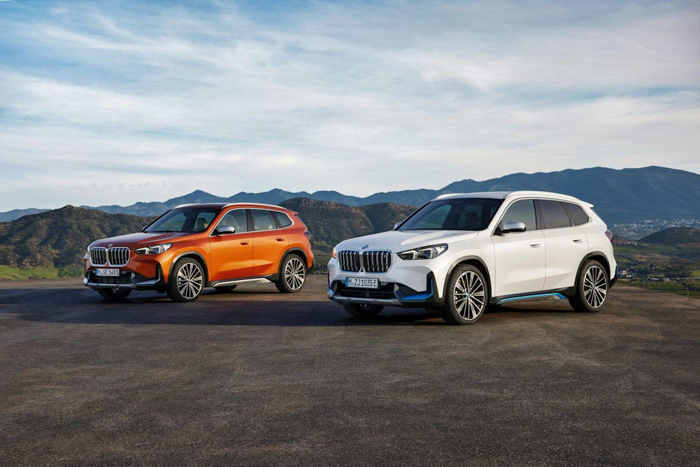

Storia della BMW
BMW (Bayerische Motoren Werke) nasce nel 1916 a Monaco producendo motori aeronautici. Finita la Prima guerra mondiale, alla Germania viene vietata la produzion e di aerei, così BMW si riconverte prima alle motociclette (celebre la R32) e poi alle automobili negli anni ’20. Negli anni ’30 il marchio si fa conoscere per auto eleganti e sportive, ma la Seconda guerra mondiale interrompe tutto. Nel dopoguerra BMW rischia il fallimento: produce persino pentole e biciclette per sopravvivere. La svolta arriva tra gli anni ’50 e ’60 con modelli di successo e una nuova identità basata su sportività e piacere di guida. Da lì in poi BMW cresce fino a diventare un marchio premium globale, famoso per berline, SUV, moto e più recentemente per l’elettrico (come la serie i), mantenendo il suo slogan non ufficiale: il gusto di guidare.
Due BMW X3 una accanto all’altra, stesse linee decise e lo stesso spirito BMW: eleganza, potenza e piacere di guida che si incontrano in ogni dettaglio.
Versione base — circa 64.200 €